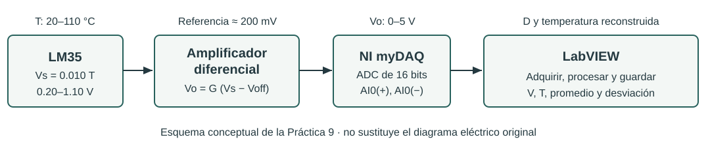
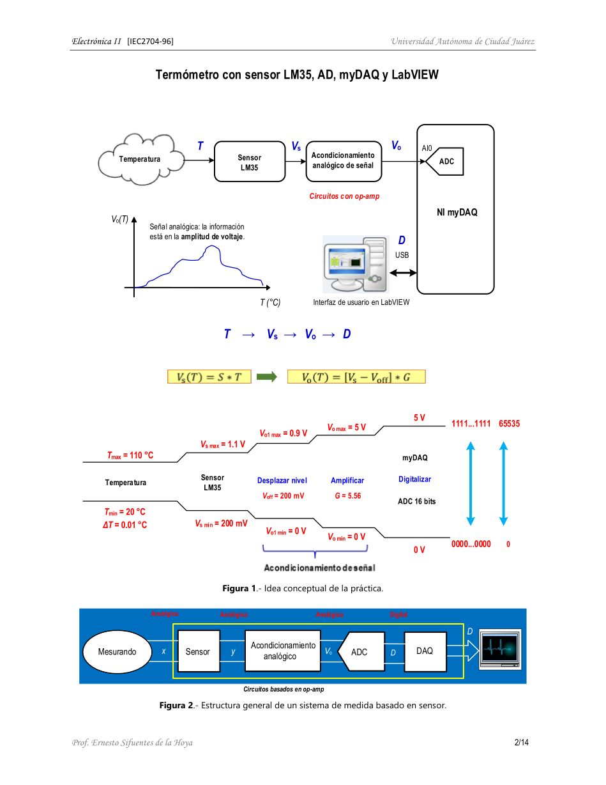
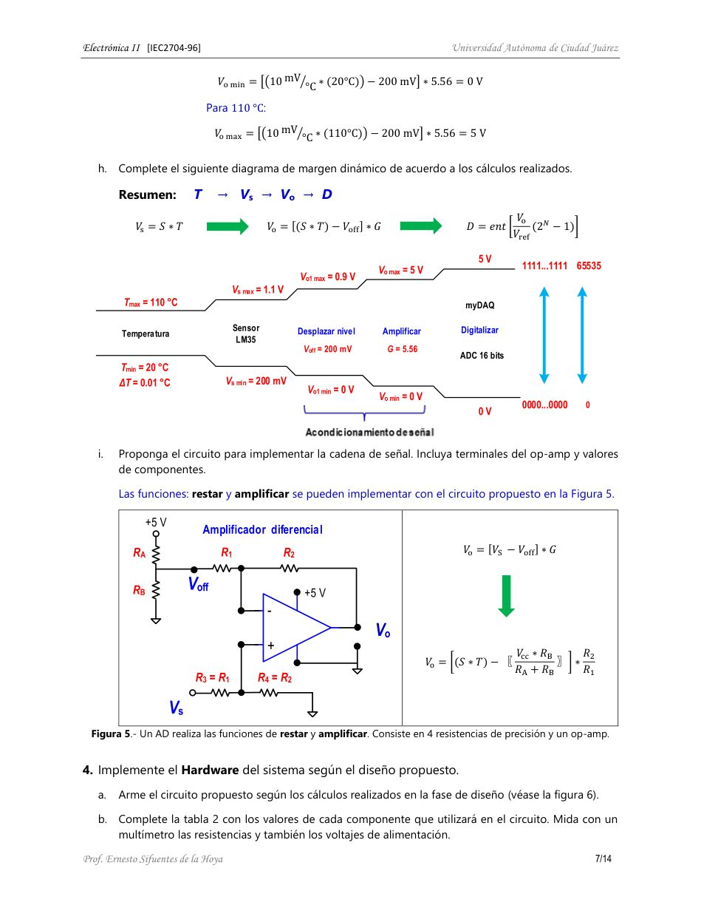
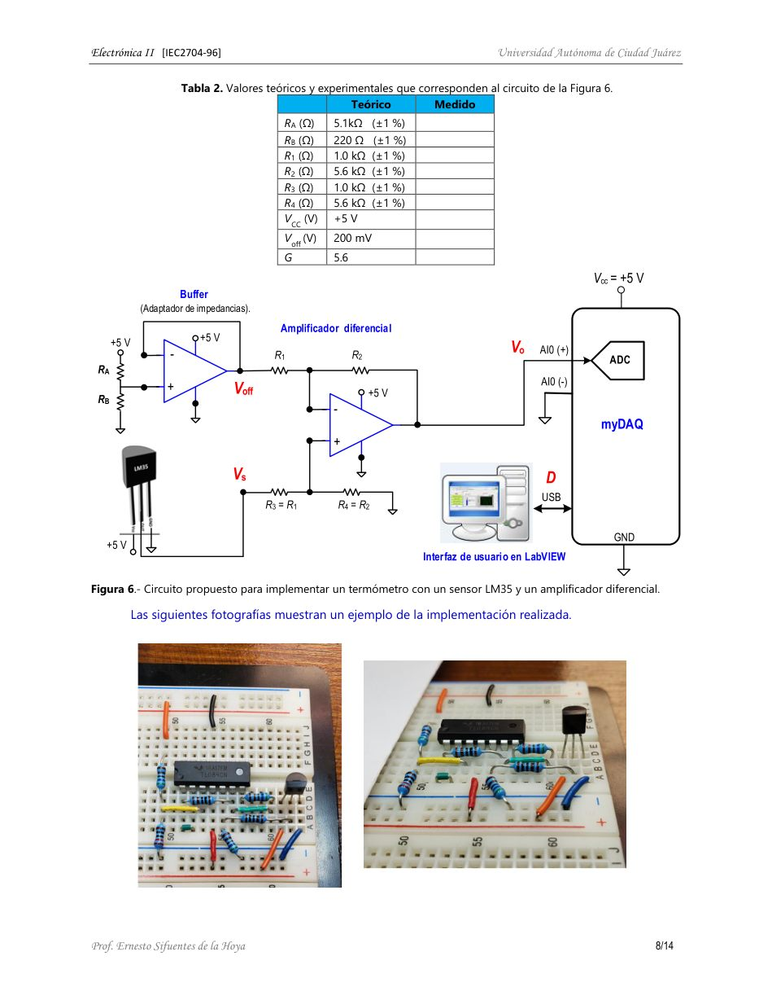
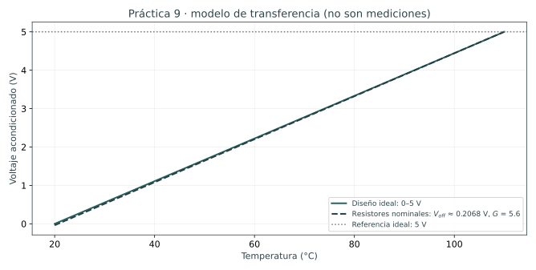
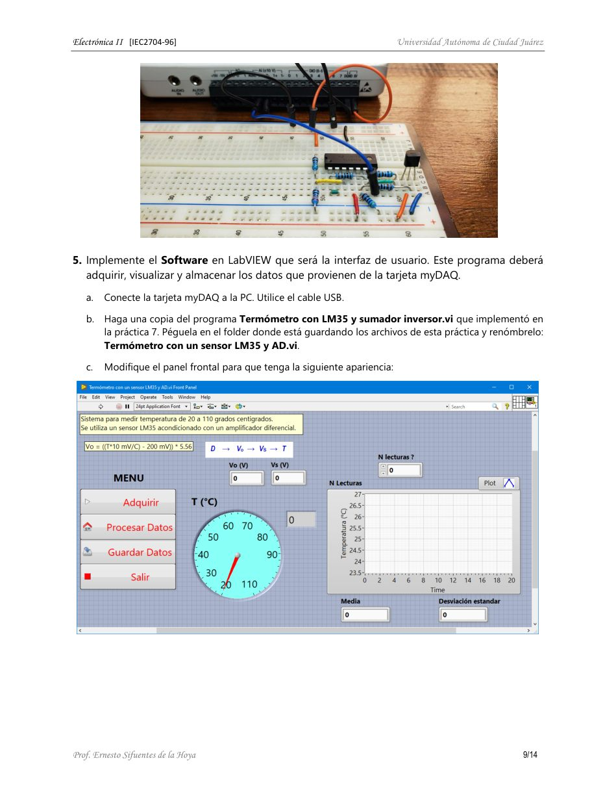
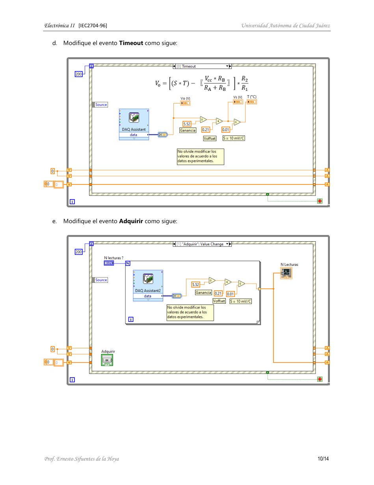
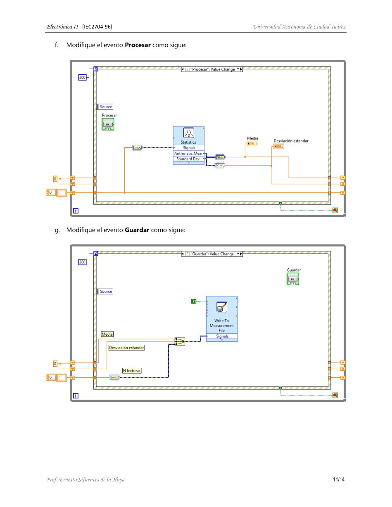
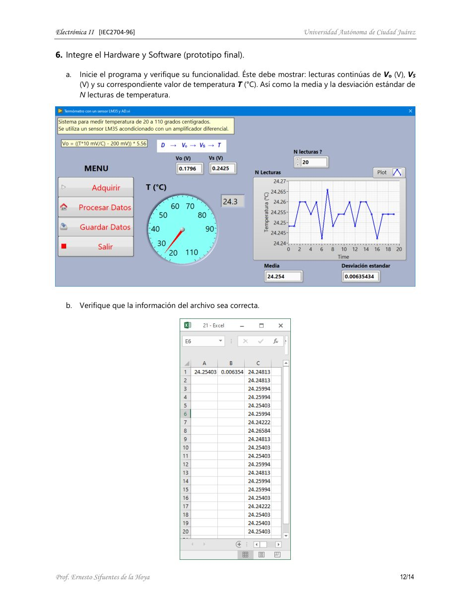

Práctica 9 · Termómetro LM35 y NI myDAQ (opción 3)
Clases 35 y 36 · 120 + 60 minutos. La práctica integra los aprendizajes de las tres opciones de termómetro: ahora se obtiene el desplazamiento de nivel y la amplificación con un amplificador diferencial (AD) de cuatro resistencias, seguido de la digitalización con NI myDAQ y una interfaz de LabVIEW. La guía original del profesor tiene 14 páginas y es la referencia principal para los montajes y capturas del programa.
Práctica 9 original · PDF Repasar amplificador diferencial Repasar Práctica 7 Agenda de semana 12 Tutor IA
1. Objetivo y materiales
Objetivo indicado en la guía: desarrollar un termómetro que emplee circuitos con amplificadores operacionales para el procesamiento de señales. El sistema debe medir en el intervalo 20–110 °C, con una resolución deseada de 0.01 °C, utilizando LM35, AD, myDAQ y LabVIEW.
Los materiales señalados son: computadora con LabVIEW instalado, NI myDAQ, amplificador TL084 o TLC274, sensor LM35, resistor de 220 Ω (±1 %), resistor de 5.1 kΩ (±1 %), dos resistores de 1 kΩ (±1 %), dos de 5.6 kΩ (±1 %), elemento de calentamiento controlado (cautín o celda Peltier), protoboard, cables y el VI desarrollado en la Práctica 7.
Distinción indispensable: la resolución objetivo de 0.01 °C describe el incremento deseado del resultado digital. No significa que el LM35, el acondicionador o el sistema completo tengan exactitud de ±0.01 °C. La exactitud debe estimarse a partir de especificaciones verificables o comprobarse mediante referencia calibrada.
2. Cadena de medida y rangos
El esquema funcional conserva la secuencia , pero reduce a una etapa diferencial principal el circuito encargado de restar y amplificar.


| Magnitud | Requisito o modelo de la guía | Comprobación |
|---|---|---|
| Temperatura | Rango de estudio; no confundir con límites propios del sensor | |
| Sensibilidad LM35 idealizada | Se debe medir o consultar ficha técnica del ejemplar | |
| Voltaje del sensor | V | Se obtiene de |
| Voltaje después de restar offset | V | ideal = 0.200 V |
| Salida ideal propuesta | V | Ganancia ideal necesaria |
| Cuantificación del ejemplo | 16 bits y rango hipotético de 0–5 V | Debe configurarse correctamente la entrada de myDAQ |
3. Modelo matemático: del LM35 al voltaje acondicionado
3.1. Sensor, desplazamiento de nivel y ganancia
El modelo del sensor es
Para usar 0–5 V como ventana de acondicionamiento, se desea que corresponda a y a V:
Por tanto,
Con el modelo de diseño ideal, la relación inversa para reconstruir temperatura es
Es importante incluir las unidades en el uso de esta última fórmula: el coeficiente 18 tiene dimensiones de °C/V.
3.2. El amplificador diferencial de cuatro resistencias
La práctica utiliza un restador con y para igualar razones y obtener la relación ideal
La red de resistores y genera a partir de +5 V. La figura 6 agrega un seguidor de voltaje para evitar que el circuito de offset se cargue al conectarlo al amplificador diferencial; así se relaciona esta práctica con las lecciones 4 y 7.


3.3. Verificación con los componentes nominales indicados
El esquema propone , , y . Para el divisor de offset, sin carga por el uso de buffer:
La ganancia nominal del diferencial es
El modelo de componentes nominales, sin corrección de calibración, predice
| (°C) | ideal (V) | de diseño (V) | con valores nominales (V) |
|---|---|---|---|
| 20 | 0.200 | 0.000 | −0.0379 |
| 40 | 0.400 | 1.111 | 1.0821 |
| 60 | 0.600 | 2.222 | 2.2021 |
| 80 | 0.800 | 3.333 | 3.3221 |
| 100 | 1.000 | 4.444 | 4.4421 |
| 110 | 1.100 | 5.000 | 5.0021 |
En 20 °C la predicción nominal es ligeramente negativa; en 110 °C es ligeramente mayor que 5 V. No suponga que el ADC o el op-amp admitirán esos voltajes fuera de rango. En laboratorio debe medirse el offset real, las resistencias y el margen de salida disponible; si procede, ajustar/calibrar la transferencia. La salida calculada con valores nominales no constituye una medición.

A , la salida nominal del LM35 es (). Para obtener las ganancias y desplazamientos de nivel, utilice los valores efectivos de resistencias y distinga los cálculos nominales de las mediciones.
Tutor IA · Diseñar el diferencial y la referencia
Sea tutor socrático de la Práctica 9 de Electrónica II y tráteme de usted. Debo diseñar un termómetro de 20 a 110 °C usando LM35, buffer, amplificador diferencial, myDAQ y LabVIEW. Pregúnteme primero los valores del voltaje LM35 en los extremos y espere mi respuesta. Después, una pregunta por turno, ayúdeme a deducir Voff, G, Vo(T) y T(Vo), identificando qué resistores implementan cada función. Exíjame comparar los ideales 200 mV y 5.5556 con el divisor de 5.1 kΩ y 220 Ω y las parejas de 1 kΩ y 5.6 kΩ. Pídame explicar la utilidad del buffer y no permita que confunda especificaciones de diseño con valores medidos o exactitud real.
4. Margen dinámico y cuantificación
Con rango y paso requerido de , la guía calcula
El número mínimo de bits para representar al menos 9000 intervalos en un sistema ideal, sin incluir incertidumbre, es bits. Para un modelo de ADC de 16 bits y un rango de referencia hipotético 0–5 V:
La sensibilidad acondicionada ideal es
Esto describe cuantificación nominal, no temperatura detectable, exactitud, ni número efectivo de bits. En un instrumento real se acumulan no linealidad del sensor, offset, tolerancias, ruido, límite de excursión de salida y errores de adquisición. En LabVIEW, documente el rango realmente configurado en NI myDAQ; no asuma que todos los modos de la tarjeta utilizan una ventana unipolar 0–5 V.
Para ilustrar un modelo unipolar ideal (no la codificación universal de cualquier configuración):
Tutor IA · Resolución frente a exactitud
Tráteme de usted y guíeme con una pregunta por turno para analizar la digitalización de la Práctica 9. Pregunte el rango de temperatura, paso objetivo, margen dinámico en intervalos y dB, bits ideales mínimos y tamaño de una cuenta si el ADC de ejemplo tiene 16 bits en 0–5 V. Antes de aceptar mi resultado pídame unidades. Exíjame distinguir resolución de cuantificación, ruido, incertidumbre y exactitud real, así como comprobar el modo de entrada seleccionado en myDAQ. No invente datos ni dé la solución completa antes de mi intento.
5. Montaje físico: secuencia de verificación
La guía solicita ensamblar el circuito de la figura 6, medir los resistores y voltajes de alimentación y registrarlos antes de integrar el sistema. Utilice el mismo orden de trabajo para localizar errores de signo y referencias:
- Verifique el pinout, alimentación permitida y margen de modo común del TL084 o TLC274 concreto. Un op-amp no necesariamente opera correctamente con salida a 0 y 5 V por el simple hecho de alimentarlo a +5 V.
- Conecte el LM35 según su hoja de datos, mida a temperatura ambiente y compruebe que resulte coherente con V.
- Arme el divisor de referencia –; mida antes y después del seguidor. Si cambia, investigue carga o cableado.
- Monte el diferencial de cuatro resistores, manteniendo las razones emparejadas. Registre medidos, no solo nominales.
- Sin conectar myDAQ, verifique con multímetro , y , anotando polaridades y la relación con la predicción matemática.
- Conecte la entrada AI0(+) y AI0(−) según figura 6 y configuración real de la tarjeta, sin exceder sus límites de entrada ni crear referencias incompatibles.
- Evite contacto directo del cautín con el encapsulado plástico del LM35; caliente a distancia y cuide los cables, la protoboard y el equipo de adquisición.
| Componente / señal | Nominal de la guía | Medido en laboratorio |
|---|---|---|
| , | 5.1 kΩ; 220 Ω | __________ |
| , | 1.0 kΩ cada uno | __________ |
| , | 5.6 kΩ cada uno | __________ |
| Alimentación y tierra | Verificar +5 V y referencia común | __________ |
| Objetivo 0.200 V; divisor nominal 0.20677 V | __________ | |
| Ganancia diferencial | Objetivo 5.5556; nominal 5.6 V/V | __________ |
6. Software LabVIEW: reutilización de la Práctica 7
El documento pide hacer una copia del programa Termómetro con LM35 y sumador inversor.vi desarrollado en la Práctica 7, guardarlo en la nueva carpeta de trabajo y renombrarlo Termómetro con un sensor LM35 y AD.vi. Ese VI de trabajo del estudiante no se encontraba incluido en el ZIP de esta semana; la guía ofrece capturas para su modificación.
Según las páginas 9–11 del PDF, se actualiza el panel frontal y cuatro eventos:
| Evento / sección | Tarea de software | Comprobación práctica |
|---|---|---|
| Timeout | Refrescar las lecturas continuas | Mostrar , y con unidades, indicando qué variables se miden y cuáles se estiman |
| Adquirir | Tomar un bloque de lecturas | Confirmar tamaño de vector y tasa de muestreo aplicada |
| Procesar | Obtener media y desviación estándar | Calcular las estadísticas de temperatura en °C, sin mezclar conversiones |
| Guardar | Exportar resultados a archivo | Comprobar columnas, encabezados, unidades y número de filas |



Verificación de trazabilidad: si únicamente se adquiere por AI0, el programa puede estimar y . No describa estos valores reconstruidos como voltajes medidos por canales adicionales si esos canales no se utilizaron.
Tutor IA · Revisar el VI sin sustituir el trabajo
Actúe como tutor de laboratorio de Electrónica II y hábleme de usted. Voy a modificar en LabVIEW el VI de la Práctica 7 para la Práctica 9. Una pregunta por turno: pídame explicar qué mide AI0 y qué variables calcula el programa; después revise conmigo los eventos Timeout, Adquirir, Procesar y Guardar, las unidades y el nombre del archivo. Solicite capturas o una descripción concreta antes de afirmar que un evento está bien configurado. Para N=20, pídame calcular media y desviación estándar sin inventar datos. No genere un VI inexistente ni afirme haber probado LabVIEW.
7. Validación experimental: grupos de 20 lecturas
La guía solicita incrementos de temperatura de aproximadamente 10 °C y 20 lecturas por punto, con registro de , , , promedio y desviación estándar. La tabla siguiente está vacía deliberadamente: no contiene mediciones de laboratorio.
| Punto | Temperatura de referencia (°C) | medido (V) | medido (V) | para (°C) | (°C) |
|---|---|---|---|---|---|
| 1 | ___ | ___ | ___ | ___ | ___ |
| 2 | ___ | ___ | ___ | ___ | ___ |
| 3 | ___ | ___ | ___ | ___ | ___ |
| 4 | ___ | ___ | ___ | ___ | ___ |
| 5 | ___ | ___ | ___ | ___ | ___ |
Para cada grupo,
Al comparar con un termómetro de referencia calibrado, puede calcular . Sin referencia calibrada, la dispersión informa sobre repetibilidad y no permite afirmar un error absoluto. Identifique también posibles problemas de tiempo de estabilización térmica, calentamiento no uniforme y ruido eléctrico.

Tutor IA · Interpretar medidas reales
Sea tutor socrático de Electrónica II, con trato de usted. Estoy validando el termómetro LM35–AD–myDAQ de la Práctica 9. Pídame primero mis resistores medidos, Voff, ganancias reales, alimentación, lecturas Vs y Vo y temperaturas. Una pregunta por turno. Guíeme para comparar ecuación teórica, cálculo con valores nominales y medidas, detectar saturación, convertir Vo a temperatura, y calcular media y desviación estándar con N=20. Si no tengo termómetro de referencia, no me permita afirmar exactitud experimental. Pídame formular al final una conclusión breve sobre el error de offset y las mejoras de calibración.
8. Informe, evidencias y retroalimentación
El informe final solicitado por la guía contiene especificaciones, diseño matemático, diagramas, tabla de resistencias medidas, fotografías del montaje, pantallas de LabVIEW, datos y estadísticas, interpretación y conclusiones. Deben contestarse sus siete preguntas de retroalimentación, entre ellas la definición del AD, diferencias con el amplificador de instrumentación, características ideales y aplicaciones. Utilice la guía original para los enunciados exactos.
Agenda de entregas: en la clase 35 se entrega el reporte de la Práctica 8; en la clase 36 se continúa la Práctica 9, se entrega el Cuestionario L7 y la simulación de los ejemplos L8 (parte 1). La planificación de la semana 12 no asigna una fecha explícita de entrega al reporte de la Práctica 9: mantenga esa distinción hasta que el profesor la indique.
Tutor IA · Preparar el informe
Tráteme de usted y sea tutor de redacción técnica de la Práctica 9 de Electrónica II. Pídame primero el objetivo y la cadena de medida que construí; después, en preguntas separadas, solicite ecuaciones verificadas, datos de resistencias, evidencia del montaje, pantallas de LabVIEW, 20 lecturas por temperatura, resultados y limitaciones. Ayúdeme a diferenciar observaciones experimentales de cálculos y a contestar con mis palabras el cuestionario final sin escribir un reporte ficticio. Verifique que mis conclusiones no atribuyan exactitud de 0.01 °C por tener un ADC de 16 bits.
Referencias: Práctica 9, Termómetro con LM35 y myDAQ (opción 3), Lección 7 (amplificador diferencial) y actividades LabVIEW de las semanas anteriores.